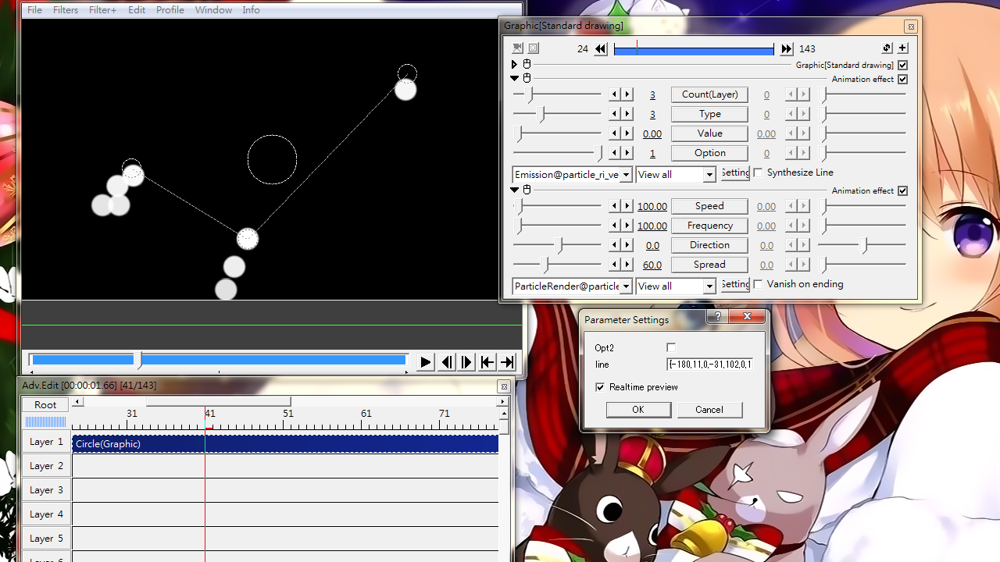
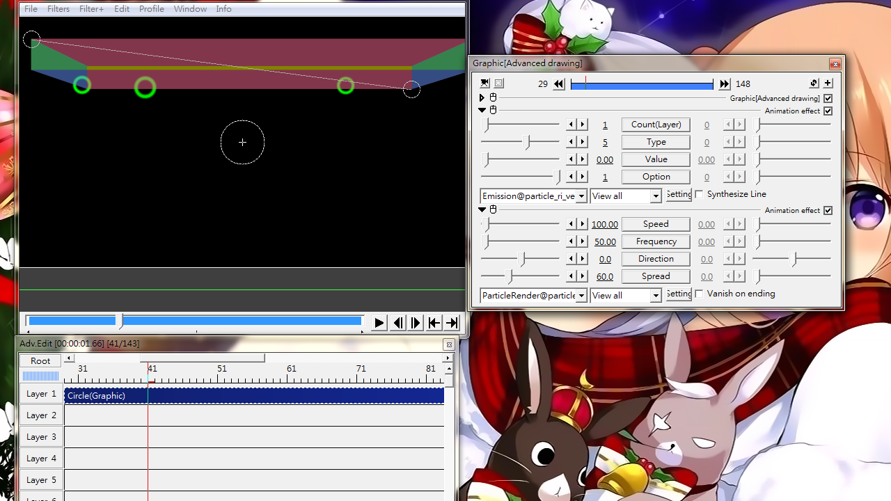
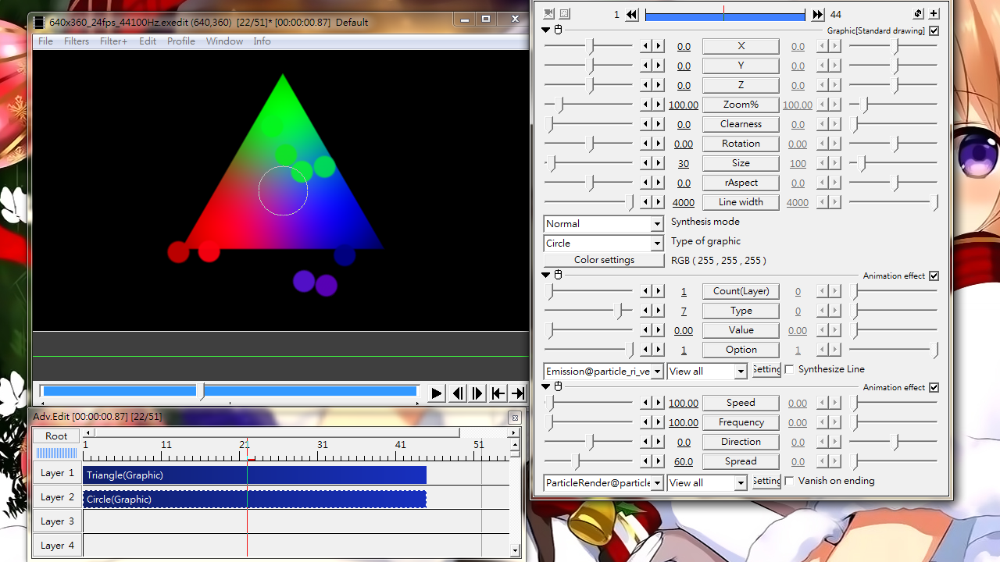

Fig04A: Emission from a line/anchor points (Type 3). The Count slider sets the number of anchor points, which allows creation of a bended path.

Fig04B: Emission from a boxed area (Type 5). Set Option=1 to visualize the emission area, set to zero to hide it.

Fig04C: Emission from a custom image (Type 7). The Count slider means the reference image(triangle) is N layer above this object(circle). Before setting type to 7, please get the reference object ready first, or error may occur.
Emission
Define emission origin as points, area or a 3D-space.
Sliders
Count(Layer)
When Type is 1, 2 or 7, this slider means "Letting the current object is on layer N, the reference object is on layer N-Count, "
When Type is 3 or 4, it means the number of anchors
When Type is 8 and used with Path@, this value is the pathID.
Type
1: Emission origin tracks another object on layer above. Count slider sets the reference layer. It tracks the reference object's x, y and z slider values. Please set the duration of the reference object the same as the particle object.
2: Almost identical to type 1
3: Defines emission from a line (Option=0) or from anchor points(Option=1). The number of anchor points is set by the Count slider. Option=0 is basically a get-around for ParticleRender not supporting temporal change via use of mid-points.
4: Similar to Type 3 but runs along the line, pretty like the worms in pacman game
5: Particles randomly emitted from a 3D-boxed region. The region is defined by 2 anchor points and the boxed region can be color-visualized by setting Option=1. Note that the anchor points may be difficult to adjust unless you switch the object to Advanced drawing mode and use with Camera control object.
6: Similar to 5 but the emission region is a sphere.
7: Similar to 1 and 2 but it also looks into the shape and color(Option=1) of the reference object. A few points to note when using type7:
Temporal change of position and rotation of reference object are supported, but anchor position, size and magnification changes are not supported.
Please set the same duration for the reference object and the particle object.
DO NOT attach the built-in Emission effect to the reference object!
8: Emission pattern determined by external topological function. Path@ should be the first child effect attached to this object. Count slider means the PathID. Sample functions can be found in the ./CustomFunctionSample folder with name Emit*.txt. Just point Path@ to one of the TXT file.
Value
When Type=2, this is a 0.1X speed multiplier. Only effective when Opt2 is checked.
When Type=4, this is the total time (in seconds) required to run from on end of the line to the other end.
When Type=5, this sets the void space(%) at the center of emission region. No particle will be emitted from the void space. Set it to zero to emit from anywhere inside the region. Set it to 100 to emit only from region boundary.
When Type=6, this also sets the center void. See the Type=5 entry above.
When Type=7, this sets the threshold for shape outline.
Option
Type1
0: Particle output direction follows reference object's movement
1: Output direction not taking object movement into account
Type2
0: same as Type 1
1: same as Type 1
Type3
0: Emit from the line as defined by anchor points
1: Emit from anchor points only
Type4
0: Stop at final anchor
1: Loop back to first anchor after the final anchor
Type5
0: Hide emission region
1: Display emission region
Type6
0: Hide emission region
1: Display emission region
Type7
0: Use this object's color
1: color depends on the reference object and the location of emission (see Fig04C)
Type8
0: Use external file as defined by Path@
1: Use Scrip control in this object instead of external file.
Check box
Synthesis Line
For type 3 and 4, enable this if you need more than 16 anchor points. Then you can attach another Emission@ child effect.
Setting dialog
Opt2
Type1: Random particle output from the path of the reference object
Type2: add particle speed with reference object's speed
Type3:
Option=0: Concurrent emission from the same spot
Option=1: Concurrent emission from different anchor points
Type4: Smooth out the motion
Type5: Concurrent emission from the same spot
Type6: Concurrent emission from the same spot
Type7: Particle output direction follows reference object's movement
line
Anchors position in numbers
About custom function
There are two types of functions that you can define, differing in return values:
Type1 template:
function xyz(t)
local r=
local x=
local y=
local z=
return x,y,z
end
where t is object time in seconds,while x,y and z are particle's emission coordinate. r is a user-defined variable.
Type2 template:
function xyzd(t)
local r=
local degxy=
local degz=
local x=
local y=
local z=
degxy=
return x,y,z,degxy,degz
end
where t is object time in seconds,
x,y,z: emission coordinate,
degxy: output angle on x-y plane in radian
degz: output angle for depth in radian.
If you are not using Script control to define these functions, please save the function as ASCII/SJIS text with .txt or .lua extension.